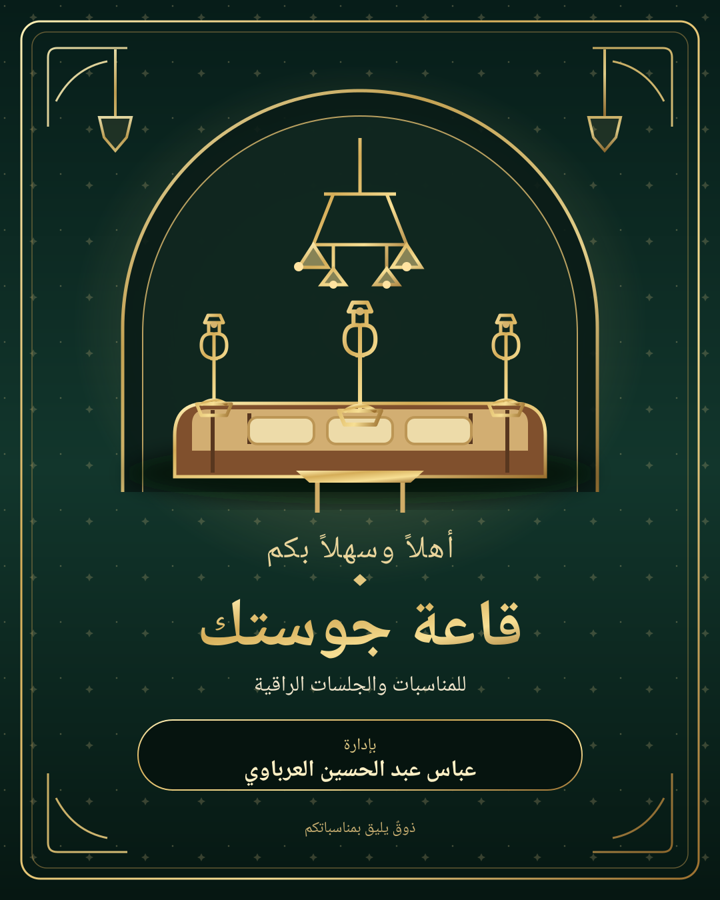

✦
أهلاً وسهلاً بكم
قاعة جوستك
للمناسبات والجلسات الراقية

اختر إصدار نظام PS4
اضغط على الإصدار المطابق لجهازك لفتح صفحته
من 5.00 إلى 14.02 · اختيار الإصدار
5.05 · FW v2.5
6.72 · GoldHEN
6.72 · v3.0
9.00 · GoldHEN
9.00 · v3.0
استعادة دليل المستخدم
بإدارة
عباس عبد الحسين العرباوي